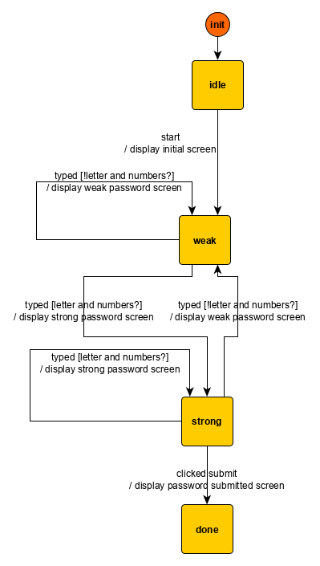

Modelization
In this section, we will use a simple user interface to further illustrate basic state machine concepts like control state, extended state, transitions, guards, action factories, and commands.
Model
The user interface to specify is a password meter. Visually, the user interface consists of a password input field and a submit password button. Its behavior is the following:
- the user types,
- for each new value of the password input, the input is displayed in green if the password is strong, and in red otherwise —- for the sake of simplicity, a password is considered strong if there are both letters and numbers in the password,
- if the password is not strong, the user click on the
submitbutton is ignored. Otherwise, the password is set to the value of the password input.
Follows some screens samples of the application in different states:
| Initial screen | Weak password | Strong password |
|---|---|---|
 |
 |
 |
In the previous section, we saw how we could associate that behavior to a pure function $g$ transforming inputs received by the interface into commands to perform on the interfaced systems.
If we choose as state the evolving content of the input field, one partial formulation for the function $g$ is:
Note that we do not reproduce the full mapping for $g$, as the input domain is infinite (while this tutorial is not). Our tables do not for instance give a mapping for the following sequence of events: [typed a, typed 2, typed backspace]. A partial formulation is sufficient for our educational purpose.
| $state_n$ | event | $commands_n$ | $state_{n+1}$ |
|---|---|---|---|
{input: ""} |
start | display initial password screen | {input: ""} |
{input: ""} |
typed a |
display weak password screen | {input: "a"} |
{input: "a"} |
typed 2 |
display strong password screen | {input: "a2"} |
{input: "a2"} |
clicked submit | display password submitted screen | {input: "a2"} |
{input: "a"} |
typed b |
display weak password screen | {input: "ab"} |
{input: "ab"} |
clicked submit | {input: "ab"} |
As we saw in the previous section, a state machine formulation involves dividing the state variable into control state and extended state. One of the possible state machines partial formulation is:
| Control state | Extended state | Event | Commands | New control state | New extended state |
|---|---|---|---|---|---|
| Idle | input: "" |
start | display initial password screen | Weak | input: "" |
| Weak | input: "" |
typed a |
display weak password screen | Weak | input: "a" |
| Weak | input: "a" |
typed 2 |
display strong password screen | Strong | input: "a2" |
| Strong | input: "a2" |
clicked submit | display password submitted screen | Done | input: "a2" |
| Weak | input: "a" |
typed b |
display weak password screen | Weak | input: "ab" |
| Weak | input: "ab" |
clicked submit | Weak | input: "ab" |
While the input domain for $g$ is infinite and cannot be exhaustively enumerated, the behavior that $g$ encodes can be accurately and entirely represented with a finite graph, linking together the control states:

The corresponding visualization is pretty straight-forward:
- nodes are control states
- edges, also called transitions, link an origin control state to a target control state and may contain a triple
event [condition] / actions. Such triple means that when theeventoccurs, if the machine is in the origin control state and theconditionis fulfilled, then theactionsare performed. Additionally, the control state for the machine changes to the target control state.
The visualization formalism has other features that we do not detail here as they are not necessary to understand the visualizations in this section.
Free guarantees
Our state machine concisely represents the fact, or property, that whatever input we receive in the Weak control state, it will only go to the Strong control state if some pre-configured condition is fulfilled (e.g. the password contains both numbers and letters). Similarly, it will only submit the password if the clicked submit event is received while it is in the Strong state.
The starting state and these two properties can be combined into another fundamental property: the machine will only submit a password if the password is strong. In short, we are able to reason formally about the machine and extract properties from its definition. This is just one of the many attractive characteristics of state machines which makes them a tool of choice for robust user interface’s implementation.